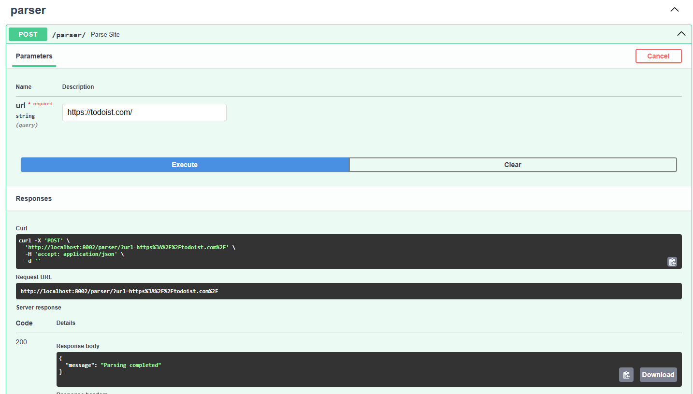
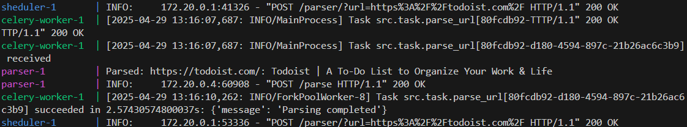

Подзадача 3: Вызов парсера из FastAPI через очередь
Сначала надо установить Redis и Сelery
pip install redis celery
Сelery config
Пишем конфиг для Сelery. Надо обязательно указать include=['src.task'], так как
иначе не может найти задачу, также надо указать для какого сервиса (sheduler).
from celery import Celery
app = Celery('sheduler',
broker='redis://redis:6379/0',
backend='redis://redis:6379/0',
include=['src.task'])
app.conf.update(
result_expires=3600,
task_serializer='json',
accept_content=['application/json'],
result_serializer='json',
timezone='UTC',
enable_utc=True,
)
if __name__ == '__main__':
app.start()
Сelery task
Пишем задачу Celery, для этого я просто вынес сюда логику запроса из обработчика.
import requests
from src.celery_config import app
@app.task
def parse_url(url: str):
response = requests.post("http://parser:8000/parse",
json={"url": url})
response.raise_for_status()
return response.json()
Docker compose
Меняем docker-compose.yml. Захотелось указать сеть, чтобы бы было видно, что
все сервисы в одной сети. Добавил сервисы celery-worker и redis.
services:
postgres-web:
image: postgres:latest
container_name: postgres-web
hostname: postgres
ports:
- "5432:5432"
environment:
POSTGRES_USER: ${POSTGRES_USER}
POSTGRES_PASSWORD: ${POSTGRES_PASSWORD}
POSTGRES_DB: ${POSTGRES_DB}
volumes:
- postgres-data:/var/lib/postgresql/data
networks:
- sheduler-network
redis:
image: redis:latest
container_name: redis
ports:
- "6379:6379"
networks:
- sheduler-network
sheduler:
image: python:3.12
working_dir: /sheduler
command: >
sh -c "cp /tmp/sheduler/requirements.txt . &&
pip install --no-cache-dir -r requirements.txt &&
mkdir -p /sheduler/data /sheduler/logs &&
uvicorn src.main:app --reload --workers 1 --host 0.0.0.0 --port 8000"
environment:
POSTGRES_USER: ${POSTGRES_USER}
POSTGRES_PASSWORD: ${POSTGRES_PASSWORD}
POSTGRES_DB: ${POSTGRES_DB}
POSTGRES_HOST: postgres
REDIS_HOST: redis
volumes:
- ./sheduler/src/:/sheduler/src/
- ./sheduler/requirements.txt:/tmp/sheduler/requirements.txt
ports:
- "8002:8000"
depends_on:
- postgres-web
- parser
- redis
networks:
- sheduler-network
parser:
image: python:3.12
working_dir: /parser
command: >
sh -c "cp /tmp/parser/requirements.txt . &&
pip install --no-cache-dir -r requirements.txt &&
mkdir -p /parser/data /parser/logs &&
uvicorn src.main:app --reload --workers 1 --host 0.0.0.0 --port 8000"
environment:
POSTGRES_USER: ${POSTGRES_USER}
POSTGRES_PASSWORD: ${POSTGRES_PASSWORD}
POSTGRES_DB: ${POSTGRES_DB}
POSTGRES_HOST: postgres
volumes:
- ./parser/src/:/parser/src/
- ./parser/requirements.txt:/tmp/parser/requirements.txt
ports:
- "8003:8000"
depends_on:
- postgres-web
networks:
- sheduler-network
celery-worker:
image: python:3.12
working_dir: /sheduler
command: >
sh -c "cp /tmp/sheduler/requirements.txt . &&
pip install --no-cache-dir -r requirements.txt &&
celery -A src.celery_config worker --loglevel=info"
environment:
POSTGRES_USER: ${POSTGRES_USER}
POSTGRES_PASSWORD: ${POSTGRES_PASSWORD}
POSTGRES_DB: ${POSTGRES_DB}
POSTGRES_HOST: postgres
REDIS_HOST: redis
volumes:
- ./sheduler/src/:/sheduler/src/
- ./sheduler/requirements.txt:/tmp/sheduler/requirements.txt
depends_on:
- redis
- postgres-web
networks:
- sheduler-network
networks:
sheduler-network:
volumes:
postgres-data:
Parser endpoint
Переписываем обработчик на асинхронный. Тут стоит заметить, что я немного неправильно поступил и отошел от задания, но мне хотелось видеть результат выводящийся, а еще один эндпоинт писать я не хотел. У меня получилось, что вместо возвращения в ответ task.id, ожидает выполнения и потом возвращает результат, но в силу асинхронности возможно все не так плохо.
from fastapi import APIRouter, HTTPException, status
from celery.result import AsyncResult
from asyncio import sleep
from src.task import parse_url
router = APIRouter(prefix="/parser", tags=["parser"])
@router.post("/")
async def parse_site(url: str):
try:
task = parse_url.apply_async((url,))
result = AsyncResult(task.id)
# Не хочу писать еще один эндпоинт который показывает статус
# таски, поэтому пусть таска поспит пока не подойдет ее очередь
while not result.ready():
await sleep(1)
if not result.successful():
raise HTTPException(status_code=status.HTTP_500_INTERNAL_SERVER_ERROR, detail=result.result)
return result.result
except Exception as e:
raise HTTPException(status_code=status.HTTP_500_INTERNAL_SERVER_ERROR, detail=str(e))
Результаты
Запрос на shedule

Что показывает в этот момент docker-compose

Вывод
Самым полезным я считаю это сети внутри docker compose, а если точнее возможность обращаться не по какому-то замысловатому хосту, и Celery, так как он дает возможность распределить нагрузку, что помогает улучшить производительность приложения.